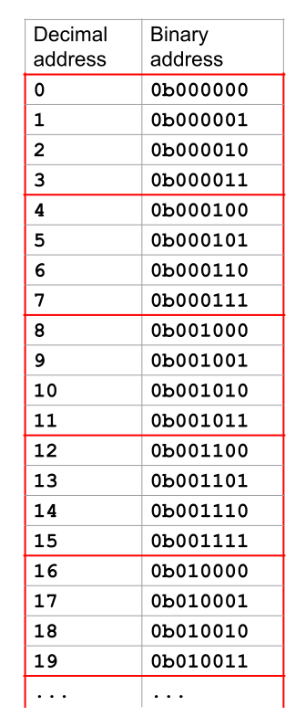

Appendix: Partial Loads and Stores
Remember that every byte in C memory is referred to by a 32-bit address. In the CPU, store and load instructions access C memory (DMEM) by passing a 32-bit address to DMEM to request bytes of memory starting at that address.
For example, if we wanted to load a byte from address 4 = 0b000100, we can pass in the address 4 (sign-extended to 32 bits) to DMEM. But what if we wanted to load a half-word (16 bits) or a byte (8 bits) from memory? How does DMEM loading and storing a different number of bytes for different types of instructions?
DMEM in Logisim
The DMEM unit in this project is always configured to access 4 bytes at a time, starting at an address that is a multiple of 4. This means that DMEM can access the bytes at memory addresses 0-1-2-3 or the bytes at memory addresses 12-13-14-15. (Intuitively, DMEM can access a set of 4 bytes in one of the red boxes in the diagram.)

However, in a single access, DMEM cannot access the bytes at memory addresses 13-14-15-16, because it does not start at a multiple of 4. (Intuitively, the 13-14-15-16 access crosses one of the red lines in the diagram, so it is not supported by DMEM.)
DMEM supports this behavior by always zeroing out the bottom 2 bits of any address you provide, and then accessing 4 bytes starting at this modified address. For example, if you give DMEM the address 19 = 0b010011, DMEM will zero out the bottom 2 bits to get 16 = 0b010000, and then accessing 4 bytes starting at this modified address (16-17-18-19).
In other words, the provided address will be rounded down to the nearest multiple of 4, and 4 bytes will be read starting at this modified address. (Note that zeroing out the bottom 2 bits of a number is mathematically equivalent to rounding down the number to the nearest multiple of 4.)
You don't need to zero out the bottom 2 bits yourself--the provided DMEM implementation will automatically do this for any address you provide.
Note 1: You don't need to think about endianness for this section. Endianness is relevant when you're trying to interpret a set of 4 bytes as a word (e.g. integer, address) to do some calculation on it, but at this level of abstraction, we only need to worry about the bits being loaded and stored, not what they mean.
Note 2: Due to Logisim size limitations, the memory unit only uses the lower 16 bits of the provided address, discarding the upper 16 bits. This means that the memory can only store 2^16 bytes of data. The provided tests will always set the upper 16 bits of addresses to 0, and any tests you write should avoid using the upper 16 bits when interacting with memory.
Alignment
In this project, all memory accesses will be aligned. This means that a single load or store instruction will never cross a word boundary in memory. (Intuitively, a single memory access will never cross one of the red lines in the diagram.)
For completeness, this means that: All lw and sw instructions will use memory addresses that end in 0b00 (i.e. are a multiple of 4). All lh and sh instructions will use memory addresses that end in 0b00, 0b01, or 0b10 (never an address that ends in 0b11).
You should not implement any unaligned memory accesses in this project.
Conceptual Overview: Loads
The partial_load.circ circuit is designed to take data read from DMEM and process it in order to put the relevant data into a register.
Remember that in RISC-V, load instructions read bytes from memory (DMEM) and put those bytes into a 32-bit register. There are three load instructions that each read a different number of bits from memory: lw reads 32 bits, lh reads 16 bits, and lb reads 8 bits. In all three instructions, 32 bits need to be put into the destination register. If fewer than 32 bits are read from memory, they are sign-extended to 32 bits before being put in the destination register.
Regardless of instruction, DMEM will always return 32 bits of memory, but in the lh and lb instructions, we only want 16 or 8 bits from memory, so we need to extract the correct bits out of the 32 bits returned from DMEM.
How do we know which of the 32 bits from DMEM we care about? We can check whether the instruction is lw, lh, or lb to know how many bits we want to extract. We can then check the bottom 2 bits of the memory address to know where in the 32 bits we want to start extracting bits.
For example, suppose we had a lb instruction on address 6 = 0b000110. We know that DMEM is going to return the 4 bytes at addresses 4-5-6-7. Intuitively, we want just the byte at address 6. We can determine this in the subcircuit with this logic: This is a lb instruction, so we only want one of these bytes. The bottom 2 bits of the address are 0b10, so we want the 2nd byte (zero-indexed), which corresponds to bits 16-23.
As another example, suppose we had a lh instruction on address 9 = 0b001001. We know that DMEM is going to return 4 bytes at addresses 8-9-10-11. Intuitively, we want the bytes at addresses 9-10. We can determine this in the subcircuit with this logic: This is a lh instruction, so we want two of these bytes. The bottom 2 bits of the address are 0b01, so we want to start extracting at the 1st byte (zero-indexed). In summary, we want to extract the 1st and 2nd bytes (zero-indexed), which corresponds to bits 8-23.
Partial Load
Fill in the partial_load.circ subcircuit.
| Signal Name | Direction | Bit Width | Description |
Instruction |
Input | 32 | The load instruction being executed. |
MemAddress |
Input | 32 | The memory address to read from (bottom two bits are not zeroed). |
DataFromMem |
Input | 32 | The data read from DMEM. |
DataToReg |
Output | 32 | The data to put in the register. |
A table of all scenarios you need to handle in the partial load subcircuit is provided below:
| Instruction | Type | Opcode | Funct3 | Bottom 2 bits of MemAddress |
Value to put in DataToReg |
| lb rd, offset(rs1) | I | 0x03 | 0x0 | 0b00 | SignExt(DataFromMem[7:0]) |
| 0b01 | SignExt(DataFromMem[15:8]) |
||||
| 0b10 | SignExt(DataFromMem[23:16]) |
||||
| 0b11 | SignExt(DataFromMem[31:24]) |
||||
| lh rd, offset(rs1) | 0x1 | 0b00 | SignExt(DataFromMem[15:0]) |
||
| 0b01 | SignExt(DataFromMem[23:8]) |
||||
| 0b10 | SignExt(DataFromMem[31:16]) |
||||
| lw rd, offset(rs1) | 0x2 | 0b00 | DataFromMem |
Conceptual Overview: Stores
The partial_store.circ circuit is designed to take data from a register and process it in order to store the relevant data into memory.
Remember that in RISC-V, store instructions read bytes from a register and put those bytes into memory (DMEM). There are three store instructions that each store a different number of bits from a register to memory: sw stores 32 bits, sh stores 16 bits, and sb stores 8 bits. Unlike loads, these are the exact number of bits that will be stored to memory (no sign-extension needed).
The partial_store.circ subcircuit has three jobs:
First, we need to extract the relevant bits from the 32-bit register data. If fewer than 32 bits are stored, they will always be the lowest bits from the register. In sh instructions, the bottom 16 bits are stored to memory, and in sb instructions, the bottom 8 bits are stored to memory.
Second, we need to put those bits in the right position of the 32-bit data we're passing to DMEM, so that the store to DMEM will store the bits at the right place in memory. We can use the bottom 2 bits of the memory address to know where to place the bits.
For example, suppose we had a sb instruction on address 3 = 0b000011. DMEM will take 32 bits of data we provide and write them to addresses 0-1-2-3, but we actually want to write 8 bits to address 3. To do this, we can make a 32-bit value where the bytes at addresses 0-1-2 (bits 0-23) are all zeros (doesn't matter), and the byte at address 3 (bits 24-31) is the 8 bits we want to store in memory.
We can use this logic to implement this in our circuit: The bottom 2 bits of the address are 0b11 = 3, so we need to place the 8 bits we want to store at the 3rd byte (zero-indexed) of the data we're passing to DMEM.
Finally, we need to create a 4-bit write mask which will tell DMEM which bytes of the data we want to store to memory. Each bit of the write mask corresponds to one of the 4 bytes in memory that DMEM might store to. If a bit in the mask is 0, DMEM will not store that byte to memory.
For example, the write mask 0b0001 says to only write the 0th byte (bits 0-8) to memory, leaving the others unchanged. The write mask 0b1100 says to only write the 2nd and 3rd bytes (bits 16-31) to memory, leaving the others unchanged.
Partial Store
Fill in the partial_store.circ subcircuit.
| Signal Name | Direction | Bit Width | Description |
Instruction |
Input | 32 | The store instruction being executed. |
MemAddress |
Input | 32 | The memory address to store to (bottom two bits are not zeroed). |
DataFromReg |
Input | 32 | The data from the register. |
MemRW |
Input | 1 | The control signal indicating whether writing to memory is enabled for this instruction. |
DataToMem |
Output | 32 | The data to store to memory. |
MemWriteMask |
Output | 4 | The write mask indicating whether each byte of DataToMem will be written to memory. |
A table of all scenarios you need to handle in the partial store subcircuit is provided below. All 3 store instructions have opcode 0x23.
| Instruction | Funct3 | Bottom 2 bits of MemAddress |
DataToMem |
MemWriteMask |
|||
| Bits 31-24 | Bits 23-16 | Bits 15-8 | Bits 7-0 | ||||
sb rs2, offset(rs1) |
0x0 |
0b00 |
0 |
0 |
0 |
DataFromReg[7:0] |
0b0001 |
0b01 |
0 |
0 |
DataFromReg[7:0] |
0 |
0b0010 |
||
0b10 |
0 |
DataFromReg[7:0] |
0 |
0 |
0b0100 |
||
0b11 |
DataFromReg[7:0] |
0 |
0 |
0 |
0b1000 |
||
sh rs2, offset(rs1) |
0x1 |
0b00 |
0 |
DataFromReg[15:0] |
0b0011 |
||
0b10 |
DataFromReg[15:0] |
0 |
0b1100 |
||||
sw rs2, offset(rs1) |
0x2 |
0b00 |
DataFromReg |
0b1111 |
|||
Note that for any non-store instruction (i.e. when your MemRW control signal is 0), MemWriteMask should be set to 0b0000.
Note: The bytes in DataToMem that aren't being written to the file (i.e. where MemWriteMask is 0) can technically be any value, but we've listed them as 0s in the table. The unit test for this part also assumes that those bytes will be 0.
Testing and Debugging
We've provided some unit tests for the partial load and store subcircuits. These are not comprehensive. You can run these tests with: